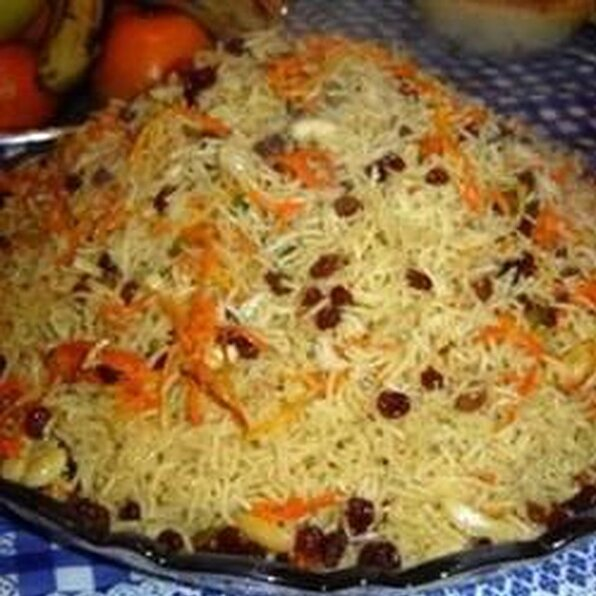

Afghani Kabli Pulao

Description
This is a delicious kabli pulao made in a pressure cooker.
The rice gets infused with flavor and has the perfect texture.
This is a must-try! You can also prepare this on your stove top.
Ingredients
- 2 cups sella basmati rice
- 5 cardamom pods, divided
- 1 onion, peeled and halved
- 1 whole head garlic, loose skins removed
- 5 whole cloves, divided
- 2 teaspoons ground black pepper, divided
- 2 teaspoons cumin seed, divided
- 1 teaspoon salt
- 1 teaspoon white sugar
- 1 cinnamon stick
- 1 teaspoon paprika
- 1 teaspoon coriander seeds
- ½ cups water
- 1 tablespoon canola oil
- 1 onion, chopped
- 1 cup carrots, chopped into matchstick pieces
- cloves garlic
- ½ cup raisins
- ½ cup slivered almonds
Steps
- Prep: 25 mins
- Cook: 42 mins
- Additional: 32 mins
- Total: 99 mins
- Servings: 6
- Yield:6 servings